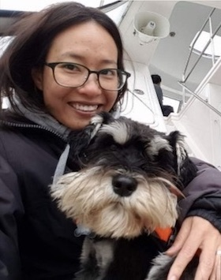

|  | NGUYEN Thi Hong NhungResearch Fellow |
Academic History:
PhD Royal Holloway, University of London, UK (2010)
BSc Hanoi College of Science, Vietnam National University (2003)
Research Interests:
I am a geographer by training, specialised in geographic information systems and remote sensing. My research interests include spatial ecology, marine biodiversity conservation, and decision support systems. My current research is on maximizing the resilience of Singapore’s coastal and marine ecosystems. Prior to joining the Reef Ecology Lab, I spent more than 8 years with the Coastal and Marine Branch, National Parks Board Singapore working on GIS data management and analyses, formulation of conservation policy, and implementation of collaborative research projects in Singapore waters.
Publications:
1. Nhung Nguyen, Karenne Tun, Lena Chan. Modifying Coastal Structures for Habitat Enhancement. Blog post at The Nature of Cities. October 2016.
2. Nhung Nguyen, Multidisciplinary approach to coastal management and enhancement in an urbanised and built-up Singapore. Conference Proceeding at the International Conference on Coastal Zones. Osaka, May 2016.
3. Nhung Nguyen, Integrated Urban Coastal Management in Singapore. Proceeding of the East Asia Seas Congress. Danang, Vietnam, November 2015.
4. Karenne Tun, Nhung Nguyen, Chou Loke Ming, Managing Singapore’s Coral Reefs. Status of Coral Reefs in East Asian Seas Region. Ministry of the Environment, Japan. 2014.
5. Nhung Nguyen, Elimar Pretch and Rachel Lim, Coastline development and associated changes in coastal habitats in Singapore. Proceedings of the 11th International Symposium for GIS and Computer Cartography for Coastal Zone Management. Victoria, British Columbia, Canada. July 2013.
6. Nhung Thi Hong Nguyen. Integrated Coastal Zone Management in Vietnam: Governance, Information, and the Applicability of Participatory Geographic Information Systems. PhD Thesis, 2010.